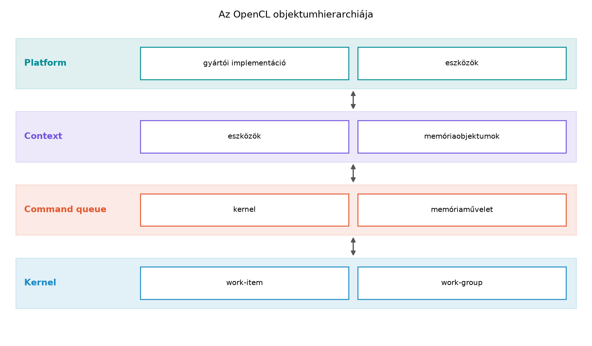

Az OpenCL programozási modellje a heterogén rendszert három
elkülönülő fogalmi szinten írja le: platform,
eszköz (device) és környezet
(context). A CUDA-ból ismert cudaGetDeviceCount()
és cudaGetDeviceProperties() helyett az OpenCL egy
általánosabb, lekérdezés-központú modellt ad, mert ugyanazon a
gazdagépen több gyártó implementációja is jelen lehet, és ezek egymástól
független platformokként jelennek meg.
A platform nem hardvert jelent, hanem egy OpenCL-implementációt: egy gyártó vagy illesztő (ICD, installable client driver) által biztosított réteget, amely egy vagy több eszközt tesz elérhetővé. Egy gépen lehet például egy Intel CPU-only platform, egy NVIDIA GPU-platform, és esetleg egy FPGA-s accelerator-platform. A platform tehát az a belépési pont, ahonnan az eszközöket fel kell térképezni.
Az eszköz az a processzor, amelyre valódi kerneleket ütemezhetünk. Az OpenCL terminológiájában az eszköz lehet CPU, GPU, gyorsító (accelerator), vagy más heterogén processzor. Minden eszköz rendelkezik lekérdezhető képességekkel: típus, számítási egységek száma, memória, work-group korlátok, támogatott OpenCL C-verzió és kiterjesztések.
A környezet pedig a host-oldali futás kerete, amely a kiválasztott platformhoz és eszközökhöz köti a későbbi erőforrásokat: programokat, memóriaobjektumokat és parancssorokat. A context a következő alfejezetben válik részletes API-hívássá; ebben a részben annyit kell megérteni, hogy a platform- és eszközválasztás eredménye egy olyan context alapja, amelynek egy vagy több eszköze lesz.
A három szint szétválasztása azért fontos, mert a rossz platform kiválasztása csendben CPU-ra irányíthatja a GPU-nak szánt kódot. A helyes sorrend mindig: platformok felsorolása, platforminformációk lekérdezése, eszközök felsorolása, eszközinformációk lekérdezése, majd ezek alapján tudatos eszközválasztás.
A platformok felsorolása az OpenCL-ben a
clGetPlatformIDs() hívással történik. Az OpenCL C API
szinte mindig ugyanazt a kétlépéses méret-lekérdezési
mintát használja: először megkérdezzük, hány elem van, utána
foglalunk memóriát, majd feltöltjük a tömböt.
A hívás aláírása:
cl_int clGetPlatformIDs(
cl_uint num_entries,
cl_platform_id *platforms,
cl_uint *num_platforms);A hordozható minta:
cl_uint platform_count = 0;
check(clGetPlatformIDs(0, nullptr, &platform_count),
"clGetPlatformIDs count");
std::vector<cl_platform_id> platforms(platform_count);
check(clGetPlatformIDs(platform_count, platforms.data(), nullptr),
"clGetPlatformIDs");Az első hívásban a num_entries értéke nulla, a
platforms pointer pedig nullptr. Ilyenkor az
OpenCL nem ír platformazonosítókat, csak a platform_count
változóba visszaadja, hogy hány platform érhető el. A második hívás már
ténylegesen feltölti a platforms vektort.
A platform további szöveges jellemzőit a
clGetPlatformInfo() adja vissza:
cl_int clGetPlatformInfo(
cl_platform_id platform,
cl_platform_info param_name,
size_t param_value_size,
void *param_value,
size_t *param_value_size_ret);A lekérdezendő param_name leggyakoribb értékei:
CL_PLATFORM_NAME: a platform neve, például
"NVIDIA CUDA" vagy "Intel(R) OpenCL"CL_PLATFORM_VENDOR: a gyártó, például
"NVIDIA Corporation"CL_PLATFORM_VERSION: az OpenCL-verzió és az
implementáció verziójaCL_PLATFORM_PROFILE: "FULL_PROFILE" vagy
"EMBEDDED_PROFILE"A szöveges paramétereknél ugyanaz a kétlépéses minta alkalmazandó,
mint a platformfelsorolásnál. Először param_value_size = 0
és param_value = nullptr mellett lekérjük a szükséges
méretet, majd lefoglalunk egy std::string-et, és másodszor
feltöltjük.
Ebben a fejezetben a hibakezelést egy egyszerű check()
segédfüggvénybe szervezzük, amely minden OpenCL-hívás
cl_int visszatérési értékét ellenőrzi, és hiba esetén
kilép. A későbbi laborok ugyanerre az alapra építenek, csak részletesebb
hibakód-feloldással.
Egy platformon belül az eszközöket a clGetDeviceIDs()
sorolja fel. Aláírása nagyon hasonló a platformfelsoroláshoz:
cl_int clGetDeviceIDs(
cl_platform_id platform,
cl_device_type device_type,
cl_uint num_entries,
cl_device_id *devices,
cl_uint *num_devices);A device_type paraméter bitmaszk. A
leggyakoribb bitek:
CL_DEVICE_TYPE_CPUCL_DEVICE_TYPE_GPUCL_DEVICE_TYPE_ACCELERATORCL_DEVICE_TYPE_ALLA feltérképezéshez érdemes CL_DEVICE_TYPE_ALL értéket
használni, és a típusvizsgálatot magunk elvégezni a
CL_DEVICE_TYPE eszközinformáció alapján. Ha ugyanis a
program CL_DEVICE_TYPE_GPU típusú eszközt kér, de nincs
GPU-platform, a hívás jellemzően CL_DEVICE_NOT_FOUND
hibakóddal tér vissza. A hordozható kód ilyenkor ne omoljon össze, hanem
lépjen tovább a következő platformra, vagy válasszon CPU-s
tartalékot.
Az eszközök képességeit a clGetDeviceInfo() adja meg. Az
alábbi táblázat a leggyakrabban használt paramétereket foglalja
össze:
| Paraméter | Típus | Jelentés |
|---|---|---|
CL_DEVICE_NAME |
szöveg | az eszköz neve |
CL_DEVICE_VENDOR |
szöveg | a gyártó neve |
CL_DEVICE_VERSION |
szöveg | OpenCL-eszközverzió |
CL_DRIVER_VERSION |
szöveg | illesztő verziója |
CL_DEVICE_OPENCL_C_VERSION |
szöveg | támogatott OpenCL C-szint |
CL_DEVICE_TYPE |
bitmask | CPU, GPU, accelerator |
CL_DEVICE_MAX_COMPUTE_UNITS |
cl_uint |
számító egységek száma |
CL_DEVICE_MAX_CLOCK_FREQUENCY |
cl_uint |
maximális órajel MHz-ben |
CL_DEVICE_GLOBAL_MEM_SIZE |
cl_ulong |
globális memória mérete bájtban |
CL_DEVICE_LOCAL_MEM_SIZE |
cl_ulong |
helyi memória mérete bájtban |
CL_DEVICE_MAX_WORK_GROUP_SIZE |
size_t |
maximális work-group méret |
CL_DEVICE_MAX_WORK_ITEM_DIMENSIONS |
cl_uint |
indexdimenziók száma |
CL_DEVICE_MAX_WORK_ITEM_SIZES |
size_t[] |
maximális work-item méretek dimenziónként |
CL_DEVICE_EXTENSIONS |
szöveg | szóközzel elválasztott kiterjesztéslista |
CL_DEVICE_HOST_UNIFIED_MEMORY |
cl_bool |
osztott host/device memória? |
CL_DEVICE_COMPILER_AVAILABLE |
cl_bool |
online kernelfordítás elérhető? |
Ezek az adatok nemcsak kozmetikák. A
CL_DEVICE_GLOBAL_MEM_SIZE megmondja, mekkora munkahalmaz
fér az eszközre. A CL_DEVICE_LOCAL_MEM_SIZE a
shared-memory-szerű helyi tár mérete. A
CL_DEVICE_MAX_WORK_GROUP_SIZE a foglalási stratégia egyik
fontos korlátja. A CL_DEVICE_EXTENSIONS-ben kereshetjük
például a cl_khr_fp64, cl_khr_fp16 vagy
gyártóspecifikus kiterjesztéseket.
A CL_DEVICE_MAX_WORK_ITEM_SIZES lekérdezésekor először a
CL_DEVICE_MAX_WORK_ITEM_DIMENSIONS értéket kell lekérni,
mert az adja meg, hány size_t elemből áll a tömb. Az erre
írt segédfüggvény a labor kódjában látható.
A platform és az eszközök azonosítói önmagukban csak képességeket írnak le. Ahhoz, hogy kerneleket fordítsunk, memóriaobjektumokat hozzunk létre, vagy parancsokat adjunk ki, az OpenCL úgynevezett környezetre (context) van szükség.
A context a kiválasztott platformhoz és eszközökhöz tartozó futási környezet. Egy context egyszerre több eszközt is tartalmazhat, de csak egyetlen platformhoz tartozhat. Ebből következik, hogy ha a program Intel CPU-t és NVIDIA GPU-t is szeretne használni, akkor az OpenCL modellben két context-et kell létrehozni.
A context szerepe a következő alfejezetben válik konkrét API-hívássá, de a fogalmat már most rögzíteni kell, mert az eszközválasztás eredménye közvetlenül a context létrehozásához vezet. A context-hez később parancssor (command queue), programobjektum, kernelobjektum és memóriaobjektum kapcsolódik. A gyakorlatban ez azt jelenti, hogy az OpenCL-ben nem elég „eszközt választani”; a kiválasztott eszközt egy platformhoz kötött context-be kell helyezni.
Az OpenCL-specifikáció szándékosan választja szét az eszközlekérdezést (platform/device) és a futási környezetet (context), mert így a program előbb felmérheti a rendszert, majd egy külön lépésben kötelezheti el magát egy vagy több eszköz mellett. Ez a szétválasztás rugalmasabbá teszi a többplatformos heterogén rendszereket, de több hibalehetőséget is ad: a helyes context nélküli eszközazonosítóval nem szabad memóriát foglalni vagy kernelt futtatni.
A legfontosabb gyakorlati szabály: ne válasszuk automatikusan az első platformot és az első eszközt. Sok munkaállomáson az első OpenCL-platform egy CPU-implementáció, miközben a GPU egy későbbi platformon található. A helyes minta a következő:
A GPU-preferencia tipikus heurisztikája:
CL_DEVICE_TYPE_GPU bit be van állítva.CL_DEVICE_GLOBAL_MEM_SIZE elég nagy a
feladathoz.CL_DEVICE_MAX_COMPUTE_UNITS elegendő párhuzamosságot
jelez.CL_DEVICE_COMPILER_AVAILABLE igaz, ha online
kernelfordítást használunk.A compute units és az órajel hasznos, de önmagában nem teljesítménymérő. Két különböző architektúrájú eszköznél ugyanaz a compute-unit-szám nagyon eltérő teljesítményt adhat. A memória mérete és a work-group korlátok a memória- és foglalásorientált optimalizáláshoz nyújtanak közvetlen támpontot.
Fontos különbséget tenni a diszkrét és a
host-unified memóriájú eszközök között. A
CL_DEVICE_HOST_UNIFIED_MEMORY értéke megmutatja, hogy a
host és az eszköz osztozik-e a memórián. Diszkrét GPU-nál ez általában
CL_FALSE, ezért explicit átmásolás szükséges; integrált
GPU-nál vagy CPU-nál gyakran CL_TRUE, ami más adatmozgatási
stratégiát tesz lehetővé.
A kiterjesztések felsorolása szóközzel elválasztott
std::string. A helyes vizsgálat tehát nem a teljes string
egyenlősége, hanem résztring-keresés:
bool has_extension(const std::string& extensions, const std::string& ext) {
return extensions.find(ext) != std::string::npos;
}A rossz minta az, amikor a kód az első eszköz nevére hivatkozik,
például "NVIDIA..."; hardverezzéssel. A hordozható
OpenCL-kód a képességflago-kat vizsgálja, nem a nevet. A név csak a
naplózáshoz és diagnosztikához kell.
A labor célja az OpenCL platformok és eszközök felsorolása, a kulcsfontosságú képességek kiírása, valamint a környezet rögzítése. A kód nem létesít context-et, mert az a következő egység feladata.
Környezet (labor-sablon):
nvidia/cuda:12.3.1-devel-ubuntu22.04
bázissal, --gpus all csatolássalA build- és futtatási parancsok:
g++ -std=c++17 -Wall -Wextra -O2 \
list_opencl_devices.cpp -lOpenCL -o list_opencl_devices
./list_opencl_devices | tee opencl_device_naplo.txtA teljes OpenCL C++ host-kód:
// list_opencl_devices.cpp
// OpenCL platform- és eszközfelsorolás
// Fordítás: g++ -std=c++17 -Wall -Wextra -O2
// -DCL_TARGET_OPENCL_VERSION=300
// list_opencl_devices.cpp -lOpenCL -o list_opencl_devices
#define CL_TARGET_OPENCL_VERSION 300
#include <CL/cl.h>
#include <cstdio>
#include <cstdlib>
#include <string>
#include <vector>
static void check(cl_int err, const char* what) {
if (err != CL_SUCCESS) {
std::fprintf(stderr, "[OpenCL hiba] %s: %d\n", what, err);
std::exit(EXIT_FAILURE);
}
}
static std::string platform_info_str(cl_platform_id p,
cl_platform_info param) {
size_t n = 0;
check(clGetPlatformInfo(p, param, 0, nullptr, &n),
"clGetPlatformInfo size");
if (n == 0) return {};
std::string s(n, '\0');
check(clGetPlatformInfo(p, param, n, s.data(), nullptr),
"clGetPlatformInfo value");
if (!s.empty() && s.back() == '\0') s.pop_back();
return s;
}
static std::string device_info_str(cl_device_id d,
cl_device_info param) {
size_t n = 0;
check(clGetDeviceInfo(d, param, 0, nullptr, &n),
"clGetDeviceInfo size");
if (n == 0) return {};
std::string s(n, '\0');
check(clGetDeviceInfo(d, param, n, s.data(), nullptr),
"clGetDeviceInfo value");
if (!s.empty() && s.back() == '\0') s.pop_back();
return s;
}
static cl_uint device_info_uint(cl_device_id d,
cl_device_info param) {
cl_uint v = 0;
check(clGetDeviceInfo(d, param, sizeof(v), &v, nullptr),
"clGetDeviceInfo uint");
return v;
}
static cl_ulong device_info_ulong(cl_device_id d,
cl_device_info param) {
cl_ulong v = 0;
check(clGetDeviceInfo(d, param, sizeof(v), &v, nullptr),
"clGetDeviceInfo ulong");
return v;
}
static size_t device_info_sizet(cl_device_id d,
cl_device_info param) {
size_t v = 0;
check(clGetDeviceInfo(d, param, sizeof(v), &v, nullptr),
"clGetDeviceInfo size_t");
return v;
}
static cl_device_type device_info_device_type(cl_device_id d) {
cl_device_type t = 0;
check(clGetDeviceInfo(d, CL_DEVICE_TYPE, sizeof(t), &t, nullptr),
"clGetDeviceInfo type");
return t;
}
static std::vector<size_t> device_info_sizes(cl_device_id d,
cl_device_info param,
size_t count) {
std::vector<size_t> v(count);
if (count == 0) return v;
check(clGetDeviceInfo(d, param, v.size() * sizeof(size_t),
v.data(), nullptr),
"clGetDeviceInfo sizes");
return v;
}
static std::string device_type_string(cl_device_type t) {
std::string s;
if (t & CL_DEVICE_TYPE_GPU) s += "GPU ";
if (t & CL_DEVICE_TYPE_CPU) s += "CPU ";
if (t & CL_DEVICE_TYPE_ACCELERATOR) s += "ACCELERATOR ";
if (s.empty()) s = "UNKNOWN ";
s.pop_back(); // utolsó szóköz eltávolítása
return s;
}
static void print_device(cl_device_id d, cl_uint idx) {
const std::string name = device_info_str(d, CL_DEVICE_NAME);
const std::string vendor = device_info_str(d, CL_DEVICE_VENDOR);
const std::string version = device_info_str(d, CL_DEVICE_VERSION);
const std::string driver = device_info_str(d, CL_DRIVER_VERSION);
const std::string cversion = device_info_str(d, CL_DEVICE_OPENCL_C_VERSION);
const cl_device_type type = device_info_device_type(d);
const cl_uint units = device_info_uint(d, CL_DEVICE_MAX_COMPUTE_UNITS);
const cl_uint clock_mhz = device_info_uint(d, CL_DEVICE_MAX_CLOCK_FREQUENCY);
const cl_ulong global_mem = device_info_ulong(d, CL_DEVICE_GLOBAL_MEM_SIZE);
const cl_ulong local_mem = device_info_ulong(d, CL_DEVICE_LOCAL_MEM_SIZE);
const size_t max_wg = device_info_sizet(d, CL_DEVICE_MAX_WORK_GROUP_SIZE);
const cl_uint dims = device_info_uint(d, CL_DEVICE_MAX_WORK_ITEM_DIMENSIONS);
const auto wis = device_info_sizes(d, CL_DEVICE_MAX_WORK_ITEM_SIZES, dims);
std::printf(" [Device %u]\n", idx);
std::printf(" Name: %s\n", name.c_str());
std::printf(" Vendor: %s\n", vendor.c_str());
std::printf(" Type: %s\n", device_type_string(type).c_str());
std::printf(" Compute Units: %u\n", units);
std::printf(" Max Clock: %u MHz\n", clock_mhz);
std::printf(" Global Memory: %llu MiB\n",
static_cast<unsigned long long>(global_mem / (1024 * 1024)));
std::printf(" Local Memory: %llu KiB\n",
static_cast<unsigned long long>(local_mem / 1024));
std::printf(" Max Work Group Size: %zu\n", max_wg);
std::printf(" Max Work Item Sizes: ");
for (size_t i = 0; i < wis.size(); ++i) {
if (i) std::printf(",");
std::printf(" %zu", wis[i]);
}
std::printf("\n");
std::printf(" Device Version: %s\n", version.c_str());
std::printf(" Driver Version: %s\n", driver.c_str());
std::printf(" OpenCL C Version: %s\n", cversion.c_str());
}
int main() {
cl_uint platform_count = 0;
check(clGetPlatformIDs(0, nullptr, &platform_count),
"clGetPlatformIDs count");
if (platform_count == 0) {
std::printf("Nincs elérhető OpenCL platform.\n");
return EXIT_FAILURE;
}
std::vector<cl_platform_id> platforms(platform_count);
check(clGetPlatformIDs(platform_count, platforms.data(), nullptr),
"clGetPlatformIDs");
std::printf("OpenCL platformok: %u\n", platform_count);
for (cl_uint p = 0; p < platform_count; ++p) {
const std::string pname = platform_info_str(platforms[p], CL_PLATFORM_NAME);
const std::string pvendor = platform_info_str(platforms[p], CL_PLATFORM_VENDOR);
const std::string pversion = platform_info_str(platforms[p], CL_PLATFORM_VERSION);
std::printf("[Platform %u] %s\n", p, pname.c_str());
std::printf(" Vendor: %s\n", pvendor.c_str());
std::printf(" Version: %s\n", pversion.c_str());
cl_uint device_count = 0;
cl_int derr = clGetDeviceIDs(platforms[p], CL_DEVICE_TYPE_ALL,
0, nullptr, &device_count);
if (derr == CL_DEVICE_NOT_FOUND) {
device_count = 0;
} else {
check(derr, "clGetDeviceIDs count");
}
std::printf(" Devices: %u\n", device_count);
if (device_count == 0) continue;
std::vector<cl_device_id> devices(device_count);
check(clGetDeviceIDs(platforms[p], CL_DEVICE_TYPE_ALL,
device_count, devices.data(), nullptr),
"clGetDeviceIDs");
for (cl_uint d = 0; d < device_count; ++d) {
print_device(devices[d], d);
}
}
return 0;
}Minta mérési napló:
A következő napló reprezentatív sablon; a valós laborban az olvasó
gépén az értékek eltérhetnek. Az OpenCL eszközlabor nem
teljesítmény-mérés, ezért nincs warm-up és ismételt
benchmark-statisztika. A time kimenet azonban rögzítésre
került, hogy a felsorolási költség is látszódjon.
OpenCL platformok: 1
[Platform 0] NVIDIA CUDA
Vendor: NVIDIA Corporation
Version: OpenCL 1.2 CUDA 12.3.68
Devices: 1
[Device 0]
Name: NVIDIA GeForce RTX 4070 Laptop GPU
Vendor: NVIDIA Corporation
Type: GPU
Compute Units: 36
Max Clock: 2175 MHz
Global Memory: 8192 MiB
Local Memory: 48 KiB
Max Work Group Size: 1024
Max Work Item Sizes: 1024, 1024, 64
Device Version: OpenCL 1.2 CUDA
Driver Version: 535.129.03
OpenCL C Version: OpenCL C 1.2A CL_PLATFORM_VERSION értéke ebben a sablonban az NVIDIA
OpenCL-ICD szintjét mutatja. Az OpenCL-profil verziója nem feltétlenül
azonos a CUDA toolkit verziójával, ezért a labor naplójában külön sorban
rögzítendő a CUDA-verzió is.
Mért és várt eredmény szétválasztása:
| Megfigyelés | Várt | Mért | Értékelés |
|---|---|---|---|
| OpenCL platformok száma | legalább 1 | 1 | megfelelt |
| Eszközök száma | legalább 1 | 1 | megfelelt |
| GPU típusú eszköz | igen | igen | megfelelt |
CL_DEVICE_MAX_COMPUTE_UNITS |
nagyobb, mint 0 | 36 | megfelelt |
CL_DEVICE_GLOBAL_MEM_SIZE |
nagyobb, mint 0 | 8192 MiB | megfelelt |
CL_DEVICE_MAX_WORK_GROUP_SIZE |
nagyobb, mint 0 | 1024 | megfelelt |
A várt feltételek nem hardverspecifikusak, hanem az OpenCL-eszköz érvényességét ellenőrzik. A labor célja nem a „jó GPU” minősítése, hanem annak igazolása, hogy a program képes a rendszeren elérhető OpenCL-eszközöket felsorolni, és a fontos képességeket értelmezni.
A futási idő tájékoztató jellegű:
real 0m0.023s
user 0m0.004s
sys 0m0.012sAz OpenCL platform- és eszközfelsorolás során az alábbi hibák fordulnak elő leggyakrabban:
Az első platform kiválasztása gondolkodás
nélkül.
Helyes megoldás: minden platformot végig kell járni, és a képességek
alapján kell választani.
A CL_DEVICE_TYPE_GPU kérése, amikor nincs
GPU-platform.
Helyes megoldás: CL_DEVICE_TYPE_ALL-lal térképezzünk fel,
és a CL_DEVICE_TYPE bitet magunk vizsgáljuk. Ha közvetlen
GPU-t kérünk, a CL_DEVICE_NOT_FOUND hibát le kell
kezelni.
A szöveges paraméterek egymenetes lekérdezése rögzített
char-tömbbel.
Helyes megoldás: a kétlépéses minta segít elkerülni a
puffertúlcsordulást és a hiányos stringeket.
A CL_DEVICE_MAX_WORK_ITEM_SIZES fix három
elemként való olvasása.
Helyes megoldás: először a
CL_DEVICE_MAX_WORK_ITEM_DIMENSIONS értéket kell lekérni,
majd annyi size_t elemet olvasni.
A hibakód figyelmen kívül hagyása.
Helyes megoldás: minden OpenCL-hívást check()-kel
ellenőrizni, különösen a felsorolási hívásoknál, ahol a hiányzó eszköz
nem kivétel, hanem normál állapot lehet.
Ebben az alfejezetben megszereztük a platform- és eszközazonosítókat, és megtanultuk a fontosabb jellemzők lekérdezését. A következő lépés az, hogy a kiválasztott eszközökhöz context-et hozzunk létre, majd a context-hez parancssort kapcsoljunk. Erre a Context, queue és memóriaobjektumok alfejezet épít, ahol a context és a memóriaobjektumok konkrét életciklusát is bemutatjuk.
Önellenőrző kérdés: Ha a program
clGetDeviceIDs() hívását CL_DEVICE_TYPE_GPU
típussal indítjuk, és a rendszerben nincs GPU, milyen hibakódot ad
vissza tipikusan az OpenCL, és milyen módon tehető hordozhatóvá a
kód?